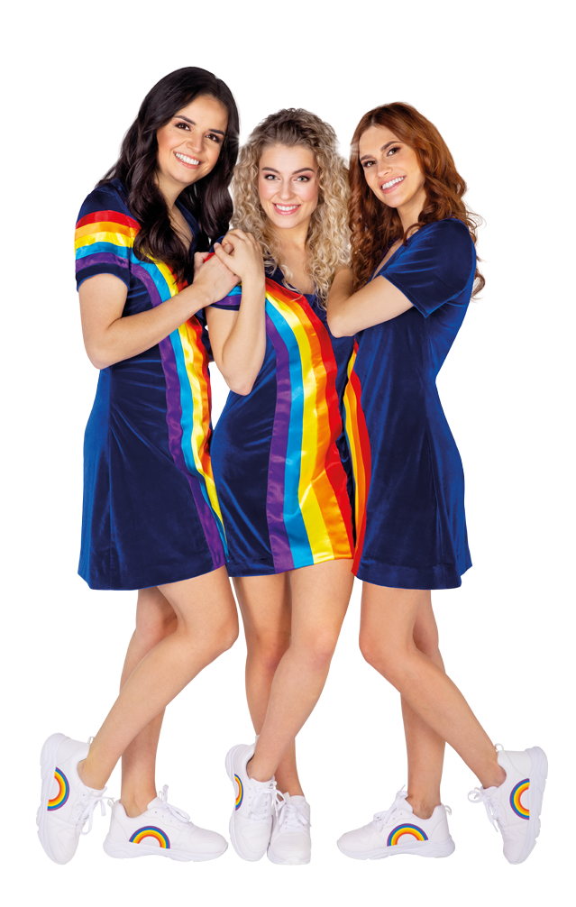

Nieuws
K3 is een leuke meidengroep met blije, enthousiaste en pakkende liedjes! Hanne, Marthe en Julia zijn elkaars beste vriendinnen en maken allerlei grappige en knotsgekke avonturen mee. Naast muziek, houden de K'tjes zich ook bezig met het maken van musicals, televisieprogramma's en bioscoopfilms rond hun liedjes en boeiende leven!
Merch
Je kan t-shirts, broeken, truien, brooddozen, enz kopen. Je kan nu ook zlef een k3tje worden en al hun kleren dragen.
Je kan altijd eens een kijkje nemen in de
webshop
Gert Verhulst
Gert Verhulst is een Belgische mediaondernemer, televisieproducent, presentator, acteur en zanger. Verhulst is met name bekend vanwege zijn rol als Gert in het televisieprogramma Samson en Gert. Daarnaast is hij een van de oprichters van het productiehuis Studio 100 en dus ook van K3.